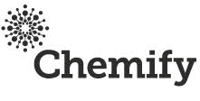
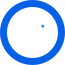

Entalpic
Working with Entalpic since before launch, we helped design their lab automation strategy and continue to consult weekly as they scale.
View project// Engaged pre-launch. Entalpic raised a €8.5M seed round

We help research teams turn hard research questions into working automation. Whether you are planning a lab, optimising the one you have, or building the capability in-house, we bring the science and the engineering together.
ChemobotAI is Jonathan Grizou, an AI and Robotics PhD, and Daniel Salley, a Chemistry PhD and former Head of Engineering at Chemify.

We work with your team at three stages: Pre-Lab, In-Lab, and In-House. Each stage below carries one example engagement, chosen to show how we operate at that point.
Know what to build before you build it.
You do not have a lab yet, or you are about to build one. We audit what your science actually requires, fix the level of automation that fits it, and help you specify the equipment, layout and build order.
Get more from the lab you already have.
You already have a lab and it needs to do more. We optimise what is there: closing the loop between experiment and decision, lifting throughput, and clearing the manual bottlenecks that cap how fast you can learn.
Build the systems that make it sustainable.
We help you build your own team and your own systems for ChemAI. We can design custom platforms for your specific research needs, and help you set up a fully equipped workspace so your team can keep developing and iterating independently.
25+ years of experience in AI, Robotics, and Chemistry
50+ Academic publications in top conferences across Robotics, AI, Chemistry

10+ custom robotics platforms designed, built, and operated and 10k+ automated experiments run
Working with top start-ups and institutions in the ChemAI space
With a PhD in AI & Robotics, awarded best thesis by Fields Medal recipient Cédric Villani, I bring deep expertise in machine learning and robotics to the chemistry space. I led an interdisciplinary team of 10 PhDs and engineers at the Cronin Group, pioneering AI-driven approaches to experimental chemistry that laid the foundation for Chemify. I have since co-founded two startups and consulted for 20+ international institutions.

A chemist by training, I have spent many years developing custom automated systems, using some of the most advanced additive manufacturing techniques. I taught myself to design, iterate, and deploy automated systems orders of magnitude cheaper than commercial options to complete a variety of research projects across inorganic chemistry. As former Head of Robotic Engineering at Chemify, I led the development of custom automated organic synthesis platforms, bridging the gap between chemistry and robotics.
“The team translated our lab priorities into a practical automation roadmap, keeping execution and chemistry in sync.” – Entalpic, Co-founding Team